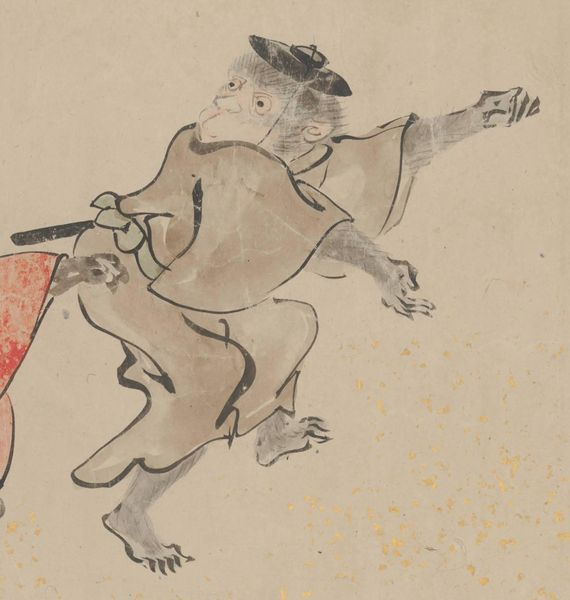

← 图鉴索引

皿を裏返したような帽子を被り、茶色い着物を着た猿が踊っている。
出典：親書誌：U426_nichibunken_0435：［妖怪絵巻］／日付：2017／資源識別子：U426_nichibunken_0435_0001_0026
Copyright (c)2010- International Research Center for Japanese Studies, Kyoto, Japan. All rights reserved.